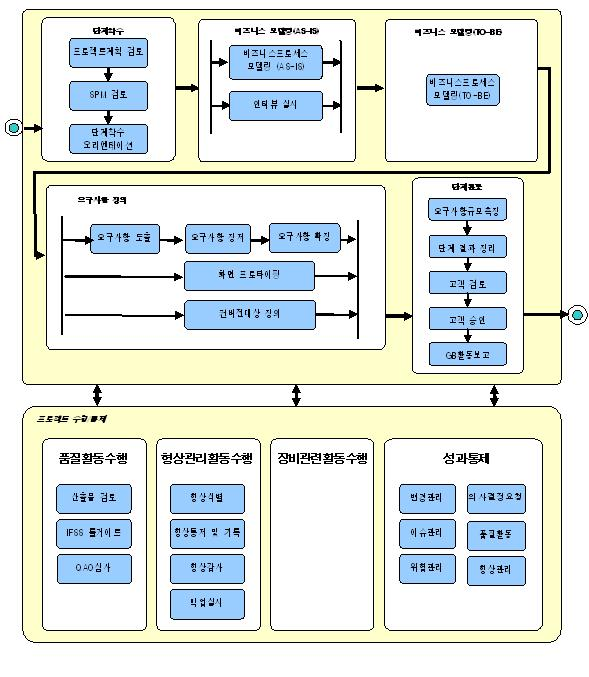

1. 개요 (Overview)
|
구분 |
내용 |
|
목표
(Goal) |
도메인의 이해와 사용자의 요구사항 정의를 통해 개발할 시스템의 범위를 파악하고 사용자 시스템에 대한 요구사항을 정형화, 명세화한다. |
|
수행 범위
(Process Scope) |
l 비즈니스 모델링(AS-IS) : 현행 시스템 구조와 현행 업무 프로세스를 파악하고 개선점을 도출
l 비즈니스 모델링(TO-BE) : 개선된 업무 프로세스를 파악하고 개선효과를 정의
l 요구사항 정의: 사용자의 기능적 요구사항을 정형화하고, 비기능적 요구사항을 체계적으로 분류하고 명세화 |
2. 정책 (Policy)
2.1 업무 분석자가 수행하며, BA, 소프트웨어아키텍트(SA), 프로젝트TA가 부수행자로 참여하며, 요구사항을 도출하고, 정제하는 책임은 PL에게 있으나 최종 베이스라인에 대한 책임은 PM에게 있다.
2.2 요구사항을 누락 없이 도출하기 위해서는 현행시스템을 분석 후 도출된 개선점 및 제안서, 계약서 상에 표기된 업무범위가 인터뷰 내역에 포함되도록 한다.
2.3 시스템에 영향을 주거나 받는 모든 이해당사자 계층으로 이루어진 대표고객협의체를 구성하여 요구사항 도출, 정제, 확정 및 구현과정에서 발생하는 주요 결정사항을 협의하도록 한다.
2.4 도출된 요구사항은 유스케이스 모델을 통하여 구체화된 산출물로 작성하며, 정제된 요구사항은 인수책임자, 대표고객협의체 등 책임이 있는 이해당사자가 함께 검토하고 공식적인 승인절차를 거쳐 확정하여 요구사항의 베이스라인을 설정한다.
2.5 기능요구사항은 유스케이스로 매핑하고, 이슈관리 툴(Dimensions)에 등록하여 진행상태를 관리하도록 한다.
2.6 요구사항은 향후 작성되는 산출물의 기준선이 되므로 작성 이후에도 지속적으로 추적관리가 되어야 한다.
2.7 베이스라인 설정 후 변경요청에 대하여는 반드시 변경요청서를 통하여 기록 보관하고 변경통제위원회(CCB)를 통한 절차를 준수토록 한다.
3. 공정 흐름도(Process Flow Diagram)

4. 고려사항(Considerations)
4.1 EA/ISP등이 수행되었거나, 기존시스템을 유지보수 하는 상황에서 개선시스템(고도화, 혹은 2차)을 개발할 경우 비즈니스프로세스 모델링은 간소화 될 수 있다.
4.2 시스템에 영향을 주거나 받는 이해당사자로 이루어진 대표고객협의체를 구성하여 요구사항 도출, 정제, 확정 및 이행의 모든 과정에서 주요사안에 대하여 협의하도록 한다.
4.3 초기에 현행시스템을 분석하여 개선점을 도출하고, 요구사항을 정의하는 과정에서는 도메인에 대한 지식이 중요하므로 업종전문가(BA)의 참여를 필수로 고려한다.
4.4 요구사항과 유스케이스로 매핑하는 것은 필수로 진행하며, 베이스라인 확정 후 추가/변경 요구사항에 대해서 변경절차를 적용하고, 추적성 확보를 위해 반드시 툴을 통하여 관리하도록 한다.
4.5 요구정의 단계를 수행하는 기간과 관련하여, 개발할 시스템의 업무에 대한 기존 시스템이 없거나, 해당 업무 영역에 대해 개발 조직의 경험이 많지 않다면 사용자의 기능적 요구사항에 대한 유스케이스 모델링과 화면 프로토타이핑 등의 적절한 수행을 위해 여유 있게 기간을 확보해야 한다.
4.6 요구정의 단계의 산출물은 분석/설계자들이 개발할 시스템에 대한 이해를 높이고 고객의 요구사항을 정확히 파악하여 분석모델에 반영할 수 있도록 하는 분석단계의 주요한 입력물이다.
- 비즈니스 모델링(TO-BE)에서 비즈니스 개념 모델을 통해 도출된 비즈니스 엔티티들은 분석모델과 설계모델의 엔티티 클래스 도출의 대상이 된다.
- 비즈니스 모델링의 분석 결과를 기준으로 도출된 사용자의 기능 요구사항은 유스케이스 모델(유스케이스다이어그램과 유스케이스정의서)로 정형화되며, 이후 분석 모델의 기준(Base Line)이 된다. 이 때, 화면 프로토타입을 병행 수행하면 사용자 요구사항 도출이 더 용이하고 정확하게 이루어 질 수 있다. 진행된 화면 프로토타이핑 결과는 개발 표준 정의와 화면 설계의 주요 입력물이 된다.
- 요구정의 단계를 통해 정의된 고객의 시스템에 대한 기능 및 비기능적 요구사항은 시스템 아키텍처 정의와 분석/설계 모델 등을 통해 일관되게 반영되어야 하며, 추적 가능 해야 한다. |